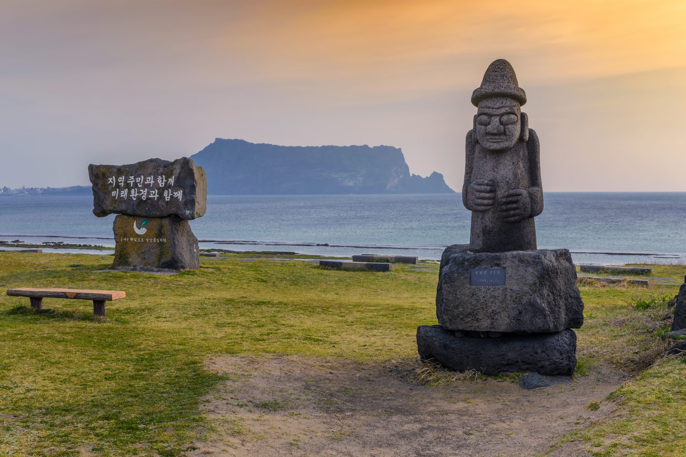

It occupies the southern border of the Korean peninsula. The country’s capital is Seoul and the official language is Korean. There is a border between South Korea and North Korea called demilitarized zone (DMZ) that was established by the terms of the 1953 armistice that ended fighting in the Korean War. After the war, the country’s economy began to soar as they worked hard to fix the country; they have the fastest rise in average GDP per capita in the world between 1980 and 1990. The June Struggle (a nationwide democracy movement) led to the end of authoritarian rule in 1987 and the country is now considered among the most advanced democracies in Asia. South Korea is a developed country and is ranked as the seventh-highest country on the Human Development Index in Asia. Its economy ranks as the world’s tenth largest by nominal GDP.
How to Get There
From Philippines: just like other countries, you have to obtain a visa before entering the country if you’re going there to travel. The travel time from Manila to Incheon Airport is about 4 hours by plane. Once you arrived in Incheon Airport and you want to go to Seoul or in other place, you could take a taxi, train, airport bus, or rental van.
Other Places to Visit in South Korea

Jeju Island
Changdeokgung Palace - Located in Seoul, it is a 15th century palace built by the Joseon Dynasty. It is where the king and the royal family lived their daily lives.
Busan - This is the second largest city in the country and it has beautiful beaches, resorts, and culture. Be sure to visit Beomsa Temple, hillside village of Gamecheon, and Jagalchi Market.
Jeonju - The spiritual capital of the Joseon Dynasty, is about 90 minutes by train from Seoul. It has many ancient temples and shrines along the hanok village.
Seoul Tower - This is the city’s iconic observation tower; it is 500 meters above sea level and the city below. It is near the Mount Namsan and the entire are Namsan Park. You could take a cable car or you could hike.
Seoraksang National Park - This national park has mountains, lakes, waterfalls, streams, and miles of hiking trails that you can explore.
Jeju Island - This is a volcanic island that could be reached via an hour-long domestic flight from Seoul. It has beautiful beaches, culture, and history. There are hiking trails, springs, and fun activities to do.